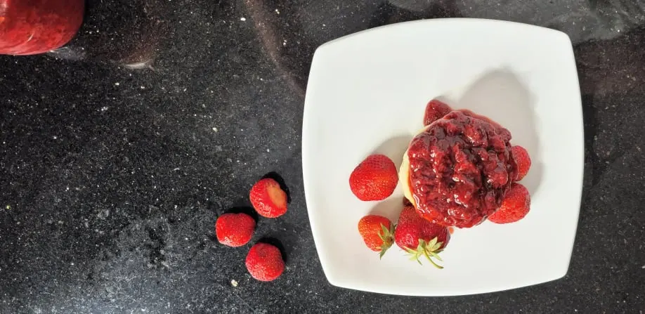

Strawberry Jam

Back to the recipe box
Description:
This quick and easy strawberry jam recipe is a delicious way to use up any extra berries you have during strawberry picking season. It has a touch of balsamic vinegar
Equipment:
- Jars are handy for storage, however it depends on what you want to do with the jam
- Heavy bottomed pot
- Potato masher
- Colander or sieve
Ingredients:
- 1 Kg Fresh strawberries Can also use frozen, but reduce the sugar slightly as frozen berries tend to be sweeter
- 175 g sugar
- 2-3 tbsp balsamic vinegar Can substitute for another acid if needed, such as lemon juice
Cooking steps:
- Begin by cleaning and quartering the strawberries, and placing them into the pot
- Add the sugar and stir them up until all the berries are covered and allow them to macerate for at least 30 minutes. Be sure to taste and see if you would like to add a bit of extra sugar for a sweeter flavour if that is your preference.
- Mash up the berries with the potato masher and add the balsamic vinegar, start with 2 tbsp and add the extra if the berries seem too sweet
- Bring to a boil on medium high heat, then lower the heat and allow to simmer until the jam has thickened to the correct consistency, this takes about 45 minutes
- Test the doneness by spooning a small amount of jam onto a cold saucer, I put mine in the freezer to get it super cold. If the jam quickly becomes the correct texture with the cold on the plate, you know you are done
- Use the potato masher to squish up any of the remaining chunks, before removing from heat to cool. You could also use an immersion blender if you don't like any chunks in your jam
Recipe notes:
You could also can your jam and preserve it for a later time.